Wired Handbuch für Anfänger
Nr. 9: Spiel beginnt und Spiel zuende
Inhalt:
1. Einführung
2. Spiel beginnt
3. Spiel zuende
4. Timer-Bugs (Theorie-Teil)
1. Einführung
Es gibt zwei Auslöser-Wireds, die mit dem Timer (siehe Nr. 8 Timer und AFK-Bank) direkt verknüpft sind. Die zwei Wireds heißen “Spiel beginnt” und “Spiel zuende”. Sobald der Timer startet wird das als “Spiel beginnt” erkannt. Man kann also einige Effekte starten sobald der Timer startet. Das gleiche geht auch, wenn der Timer abgelaufen ist. Dies wird als “Spiel zuende” erkannt und Effekte können ausgelöst werden sobald der Timer endet. Beide Auslöser werden genauer erklärt. Außerdem werden wir auf zwei sehr wichtige Bugs (= Programmierfehler) eingehen und zeigen wie man diese vermeiden kann.
Dieser Artikel wird in einigen Punkten über das Grundwissen (u. a. auch über das fortgeschrittene Wissen) hinausgehen, um gewisse Sachverhalte begreiflicher zu machen aber auch, um zu zeigen wie weit man in die Materie eintauchen kann.
2. Spiel beginnt
Der Auslöser "Spiel beginnt" löst aus, wenn der Timer startet. Das Wired erkennt den Timer-start automatisch, daher muss im Wired-Fenster nichts weiter eingestellt werden. Bei automatischen Games ohne Leiter verwendet man den Auslöser oft, um den Eingang zum Spielfeld zu öffnen. Im Folgenden wird gezeigt wie eine einfache Warteschlange damit eingestellt werden kann.
Inhalt:
1. Einführung
2. Spiel beginnt
3. Spiel zuende
4. Timer-Bugs (Theorie-Teil)
1. Einführung
Es gibt zwei Auslöser-Wireds, die mit dem Timer (siehe Nr. 8 Timer und AFK-Bank) direkt verknüpft sind. Die zwei Wireds heißen “Spiel beginnt” und “Spiel zuende”. Sobald der Timer startet wird das als “Spiel beginnt” erkannt. Man kann also einige Effekte starten sobald der Timer startet. Das gleiche geht auch, wenn der Timer abgelaufen ist. Dies wird als “Spiel zuende” erkannt und Effekte können ausgelöst werden sobald der Timer endet. Beide Auslöser werden genauer erklärt. Außerdem werden wir auf zwei sehr wichtige Bugs (= Programmierfehler) eingehen und zeigen wie man diese vermeiden kann.
Dieser Artikel wird in einigen Punkten über das Grundwissen (u. a. auch über das fortgeschrittene Wissen) hinausgehen, um gewisse Sachverhalte begreiflicher zu machen aber auch, um zu zeigen wie weit man in die Materie eintauchen kann.
2. Spiel beginnt
Der Auslöser "Spiel beginnt" löst aus, wenn der Timer startet. Das Wired erkennt den Timer-start automatisch, daher muss im Wired-Fenster nichts weiter eingestellt werden. Bei automatischen Games ohne Leiter verwendet man den Auslöser oft, um den Eingang zum Spielfeld zu öffnen. Im Folgenden wird gezeigt wie eine einfache Warteschlange damit eingestellt werden kann.

WIRED Auslöser: Spiel beginnt
Ziel: Einzelne Spieler sollen durch eine Warteschlange gelangen. Im Spielfeld darf pro Runde nur ein User rein. Das Spiel soll immer dann automatisch starten sobald ein Spiel zuende ist und der nächste Spieler bereit steht. Der User im Spielfeld soll am Ende des Spiels rausteleportiert werden, wenn der nächste Spieler dran kommt.
Das Gif zeigt wie das ganze aussehen soll:
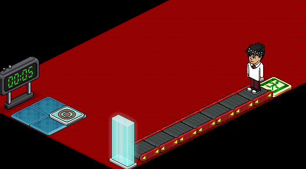
Warteschlange für automatische Games
Die Freezeböden sollen das Spielfeld andeuten.
Der Wired-Aufbau auf einem Blick:
Der Wired-Aufbau auf einem Blick:
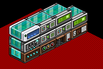
Von links nach rechts: 1. bis 4. Stapel
Im Prinzip benötigt man vier Wired-Stapel, um allein den Eingang bzw. die Warteschlange (ohne Game) einzustellen. Hier kurz die Funktionen der vier Stapeln zusammengefasst:
1. Stapel: Erkennt, wenn der nächste Spieler wartet und startet das Spiel neu, sobald die Runde vorbei ist.
2. Stapel: Erkennt, dass das Spiel startet und öffnet dann die Tür, falls nach einigen Sekunden keiner reinkommt schließt er die Tür automatisch wieder.
3. Stapel: Erkennt, dass ein User die Tür betritt und teleportiert ihn zum Spielfeld, außerdem schließt er beim betreten die Tür damit kein weiterer Spieler rein kann.
4. Stapel: Dieser Stapel wird für das Spielende wichtig, falls keine weiteren Spieler warten. Dann wird man nämlich nicht automatisch nach draußen gekickt sondern muss Exit schreiben.
Einstellungen zum 1. Stapel:
1. Stapel: Erkennt, wenn der nächste Spieler wartet und startet das Spiel neu, sobald die Runde vorbei ist.
2. Stapel: Erkennt, dass das Spiel startet und öffnet dann die Tür, falls nach einigen Sekunden keiner reinkommt schließt er die Tür automatisch wieder.
3. Stapel: Erkennt, dass ein User die Tür betritt und teleportiert ihn zum Spielfeld, außerdem schließt er beim betreten die Tür damit kein weiterer Spieler rein kann.
4. Stapel: Dieser Stapel wird für das Spielende wichtig, falls keine weiteren Spieler warten. Dann wird man nämlich nicht automatisch nach draußen gekickt sondern muss Exit schreiben.
Einstellungen zum 1. Stapel:
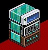
Startet den Timer
Zuerst wird ein Spieler wahrgenommen, der als nächstes dran ist. Dazu benötigen wir ein Wired vom Wiredtyp Bedingungen (siehe Nr. 3: Reset und Bedingung, 3. Bedingung). Wir brauchen das Wired Habbo auf Möbel (nicht verwechseln mit WIRED Bedingung: Auslösender Habbo steht auf Möbelstück!).
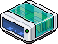
WIRED Bedingung: Habbo auf Möbel
Verwendung: Im Wired "Habbo auf Möbel" wird das Möbelstück ausgewählt, worauf ein Habbo sein muss, damit der Stapel ausgeführt werden kann. Der Roller vor der Glastür wird ausgewählt.
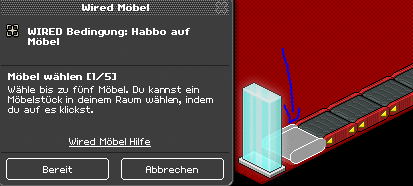
Nur falls sich ein Habbo auf dem ausgewähltem Roller befindet kann der Stapel den Effekt auslösen.
Im Wired "Möbelzustände umschalten" wird der Timer ausgewählt, die Effektzeit darf nicht auf Null bleiben. Empfohlen sind 1 oder mehr Sekunden. Grund dafür wird im 4. Punkt "Timer-Bugs" erläutert.
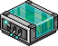
WIRED Effekt: Möbelzustände umschalten
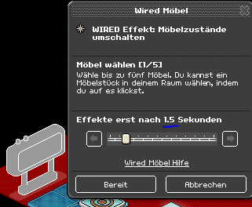
Die Effektzeit von Möbelzustände umschalten muss über 0 Sekunden sein, damit der Timer richtig startet.
Effekt wiederholen wird auf 0,5 Sekunden eingestellt.
Einstellungen zum 2. Stapel:
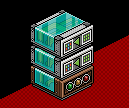
Öffnet die Tür bei Spielstart und schließt sie danach wieder
Der Auslöser "Spiel beginnt" erkennt automatisch, wenn der Timer startet. Der 1. Stapel (siehe oben) startet den Timer sobald ein Habbo vor der Tür steht und kein Spiel begonnen wurde. Durch den Timer-start wird dann dieser Stapel hier aktiv und öffnet die Tür. Nach 4 Sekunden schließt die Tür wieder.
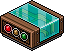
WIRED Auslöser: Spiel beginnt
Verwendung: In diesem Wired muss nichts eingestellt werden und kann auch nichts eingestellt werden. Er muss nur im Stapel vorhanden sein und erkennt immer, wenn ein Timer startet.
Bei den 2 Effekt-Wireds wird das öffnen und schließen eingestellt.

WIRED Effekt: Möbelstück nimmt Zustand und Position ein
Zuerst soll die Tür öffnen. Dafür wird im 1. Posi-Wired (Abkürzung für "Möbelstück nimmt Zustand und Position ein") die Tür im geöffnetem Zustand ausgewählt und gespeichert. Der Haken für ganz oben wird ausgewählt. Die Effektzeit bleibt bei 0 Sekunden.
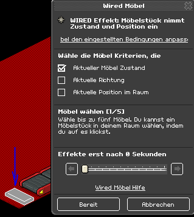
Einstellungen für den 1. Posi-Effekt
Im 2. Posi-Wired wird die Tür auch ausgewählt nur diesmal im geschlossenem Zustand und die Effektzeit beträgt 4 Sekunden.
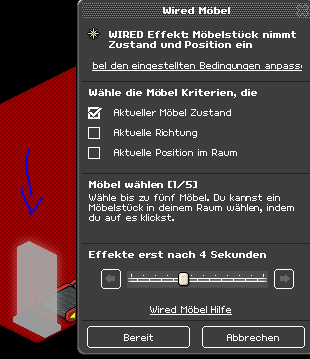
Einstellungen für den 2. Posi-Effekt
Dadurch bleibt die Tür für 4 Sekunden offen und schließt dann wieder. Das Schließen ist dafür gedacht, dass falls niemand reingeht die Tür automatisch schließt, wenn es nicht durch einen Habbo geschlossen wird. Die Effektzeit sollte nicht kürzer als 3 Sekunden sein, weil die Roller ca. alle 2 Sekunden abrollen. Das heißt, falls die Tür schon schließt bevor der User in die Tür reingerollt wird kommt er so nicht ins Spiel und muss warten.
Einstellungen zum 3. Stapel:
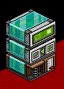
Schließt die Tür und Teleportiert den Spieler
Tritt ein User auf die Glastür soll die Tür schließen und der User soll zum Spielfeld teleportiert werden.

WIRED Auslöser: Habbo tritt auf Gegenstand
Verwendung: Das Tritt-auf Wired fixiert die Glastür.
Im Teleport-Wired wählt man aus, wo der Spieler bei Spielstart im Spielfeld sein soll. Meistens reicht es, wenn die Effektzeit beim Teleport-Wired auf 0,5 Sekunden ist. Es kann aber unter Umständen passieren, dass beim Spielreset mehr Zeit gebraucht wird. Das muss man dann berücksichtigen und kann die Effektzeit auf sein Spiel anpassen.
Falls man eine andere Methode verwendet in dem der Timer später starten soll, muss man darauf achten, dass man beim Timer start nicht schon auf die Freeze Böden steht. In diesem Fall wäre es möglich das, durch die Effektzeit vom Teleport-Wired zu umgehen. Das betrifft natürlich nur die, die den Byebye Boden im Raum haben (siehe Nr. 8: Timer und AFK-Bank).
Beim Posi-Wired wird die Tür fixiert, einen haken ganz oben bei "Aktueller Möbel Zustand" gesetzt und die Effektzeit auf 0,5 Sekunden eingestellt. Dabei muss die Tür beim Speichern zu sein.
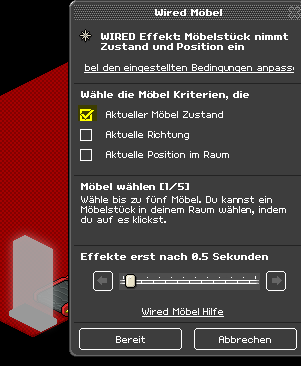
Die Effektzeit vom Posi-Wired beträgt 0,5 s
Hintergrundwissen
Die Effektzeiten vom Teleport- und Posi-Wired sind aus einem bestimmten Grund nicht auf 0 Sekunden gesetzt. Setzt man die Effektzeit beim Posi-Wired auf 0 Sekunden passiert es manchmal, dass die Tür aufbleibt. Ein Grund für diesen Bug hängt mit fehlerhaftem Einstellen zusammen. Da das mit Bedingungen zusammenhängt werden wir die genaue Erklärung im fortgeschrittenem Teil behandeln. Viele Wired-Techniker weisen aber noch auf einen anderen Grund hin. Demnach soll dieser Fehler auch von Habbo selbst kommen (es kann auch sein, dass das bei einer anderen Wiredversion noch so war). Fakt ist jedoch, dass dieser Bug umgangen werden kann, entweder durch die Effektzeit-Erhöhung oder wie oben erwähnt durch eine andere Möglichkeit, die wir im fortgeschrittenem Teil ansprechen werden.
Das Teleportieren muss auf diesen Timing angepasst werden, daher beträgt die Effektzeit dort auch 0,5 s. Ansonsten wäre der User weg bevor die Tür zu ist und es gäbe eine ganz kurze Zeit in der noch jemand auf die Glastür treten könnte. Wenn der User aber nach 0,5 s teleportiert wird blockiert er den Weg zur Tür bis sie geschlossen wird. Dafür muss das Durchlaufen im Raum deaktiviert sein.
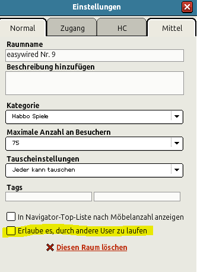
Der Haken darf nicht gesetzt sein
Einstellungen zum 4. Stapel:
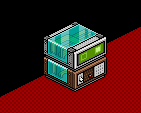
Spiel verlassen durch Exit
Exit ist eine Grundeinstellung und sollte (fast) immer bei automatischen Games eingebaut werden. Hier hat diese Einstellung eine noch wichtigere Bedeutung als normalerweise. Denn man wird nicht immer automatisch aus dem Spielfeld gekickt, wenn das Spiel zuende ist. Sondern nur dann, wenn jemand auf der Warteschlange als nächstes dran kommt.
Falls keiner auf der Warteschlange ist bleibt man im Game und muss Exit sagen, um raus zu kommen. Natürlich kann man einstellen, dass man immer bei Spielende rausteleportiert wird aber dazu benötigt man Wireds, die noch nicht betrachtet wurden.
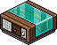
WIRED Auslöser: Ein Habbo sagt etwas
Verwendung: Im Sagt etwas Wired schreibt man "exit" hinein und speichert.
Im Teleport-Wired wählt man den Anfang der Warteschlange aus oder den ByeBye Boden.
Diese Warteschlange ist natürlich nur eine von sehr vielen Möglichen Varianten.
3. Spiel zuende
Das Spiel zuende Wired hätte man theoretisch auch als Auslöser verwenden können, um die Tür am Ende des Spiels zu öffnen. Jedoch würde das zu Bugs führen. Der Bug wird im nächsten Abschnitt unter 4. Timer-Bugs behandelt. Wir zeigen trotzdem wie man das einstellen würde, damit man die Funktion des Wireds versteht.
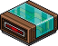
WIRED Auslöser: Spiel zuende
Ziel: Eine Glastür soll sich nach Beenden des Timers öffnen.
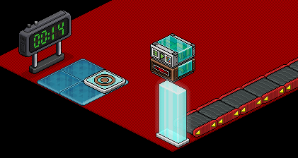
Sobald der Timer endet öffnet sich die Glastür durch die Wireds
Verwendung: Im Spiel zuende Wired muss nichts eingestellt werden genauso wie beim Spiel beginnt Wired. Das Wired wird Effekte erst dann auslösen, wenn der Timer abgelaufen ist.
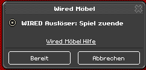
Das Wired funktioniert automatisch
Im Posi-Wired wird dann nur noch gespeichert, dass die Tür geöffnet wird.
Theorie-Teil (Hintergrundwissen auch für Profis)
4. Timer-Bugs
In diesem Abschnitt beschäftigen wir uns mit zwei Bugs, die mit dem Timer in Verbindung stehen. Im 1. Fall wird erklärt werden wieso man die Tür bei der Warteschlange durch den Timer-Start öffnet und nicht schon, wenn der Timer sich beendet also bei Spielende. Im 2. Fall wird gezeigt weshalb die Effektzeit für den Timer-Start im Möbelzustände umschalten Wired höher sein muss als 0 Sekunden und wieso sich der Timer manchmal beim Starten aufhängt.
1. Der Timer-zuende-Bug:
Wenn der Timer endet wird das normalerweise vom Auslöser Spiel zuende erkannt. Es gibt aber ein Fall indem das nicht passiert. Nämlich dann, wenn sich ein Spieler im Raum befindet und eine Spielrunde bzw. den Timer startet und danach den Raum verlässt, sodass niemand mehr im Raum ist und der Timer weiter läuft. In einem Raum ohne Habbos werden nach ca. 30 - 45 Sekunden sämtliche Funktionen deaktiviert (wir bezeichnen dies als "Funktionsdeaktivierung"). Das heißt auch die Wireds und der Timer sind davon betroffen und werden sozusagen angehalten. Somit wird der Auslöser Spiel zuende nicht aktiv und löst nicht den Effekt aus, der die Tür für die Warteschlange öffnet.
Die Funktionsdeaktivierung taucht auch dann auf, wenn man den Bodenlayout Editor speichert. Mit dem Unterschied, dass man keine ca. 30 Sekunden warten muss. Damit reloadet der Raum vollständig. Das ist der unterschied zum Raum neu betreten, wodurch nicht wirklich was resettet wird. Möchte man den Raum mit dem Editor reloaden, sollte man darauf achten, dass Wireds nicht grade am Auslösen sind oder Auslöser grade etwas aktivieren, sonst könnten Bugs auftreten, da die Effekte durch das Neuladen gestoppt werden. Im folgendem Gif kann man sehen wie der Timer der noch läuft durchs Neuladen resettet wird.
In diesem Abschnitt beschäftigen wir uns mit zwei Bugs, die mit dem Timer in Verbindung stehen. Im 1. Fall wird erklärt werden wieso man die Tür bei der Warteschlange durch den Timer-Start öffnet und nicht schon, wenn der Timer sich beendet also bei Spielende. Im 2. Fall wird gezeigt weshalb die Effektzeit für den Timer-Start im Möbelzustände umschalten Wired höher sein muss als 0 Sekunden und wieso sich der Timer manchmal beim Starten aufhängt.
1. Der Timer-zuende-Bug:
Wenn der Timer endet wird das normalerweise vom Auslöser Spiel zuende erkannt. Es gibt aber ein Fall indem das nicht passiert. Nämlich dann, wenn sich ein Spieler im Raum befindet und eine Spielrunde bzw. den Timer startet und danach den Raum verlässt, sodass niemand mehr im Raum ist und der Timer weiter läuft. In einem Raum ohne Habbos werden nach ca. 30 - 45 Sekunden sämtliche Funktionen deaktiviert (wir bezeichnen dies als "Funktionsdeaktivierung"). Das heißt auch die Wireds und der Timer sind davon betroffen und werden sozusagen angehalten. Somit wird der Auslöser Spiel zuende nicht aktiv und löst nicht den Effekt aus, der die Tür für die Warteschlange öffnet.
Die Funktionsdeaktivierung taucht auch dann auf, wenn man den Bodenlayout Editor speichert. Mit dem Unterschied, dass man keine ca. 30 Sekunden warten muss. Damit reloadet der Raum vollständig. Das ist der unterschied zum Raum neu betreten, wodurch nicht wirklich was resettet wird. Möchte man den Raum mit dem Editor reloaden, sollte man darauf achten, dass Wireds nicht grade am Auslösen sind oder Auslöser grade etwas aktivieren, sonst könnten Bugs auftreten, da die Effekte durch das Neuladen gestoppt werden. Im folgendem Gif kann man sehen wie der Timer der noch läuft durchs Neuladen resettet wird.
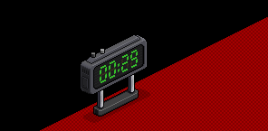
Beim vollständigen Raumreload taucht die Funktionsdeaktivierung auf
Da man also den Auslöser Spiel zuende nicht so einfach nehmen kann, wählt man oft die Variante, in dem der Timer startet sobald jemand vor der Glastür steht. Dann wird der Spielstart genutzt, um die Tür zu öffnen. Jedoch verbirgt sich im Spielstart ebenfalls ein spezieller Bug, den wir "Timer-start-Bug" nennen.
2. Der Timer-Start-Bug:
Manchmal kann es passieren, dass der Timer nicht richtig startet und direkt beendet wird. Ob dieser Bug auftaucht hängt von verschiedenen Faktoren ab. Nicht alle können hier behandelt werden, da man nicht immer sicher sein kann, dass auch alle Faktoren eingeschlossen wurden. Wir werden stattdessen die wichtigsten Faktoren aufzeigen und grundsätzlich erläutern wie dieser Bug zustande kommt und wie man ihn vermeiden kann. Vorher muss man aber noch einige technische Dinge über Timer und Wireds verstehen:
Sobald Timer gestarten werden brauchen sie immer eine kurze Zeit, um richtig starten zu können. Diese Zeit ist die "Resetzeit". So etwas gibt es auch bei den Wireds, sie reseten sich, damit sie wieder neu funktionieren. Ansonsten wären Wireds nur einmalig verwendbar. Ganz besonders tritt ein Reset bei dem Auslöser Effekt wiederholen auf, da in diesem Wired selbst auch ein Timer vorhanden ist.
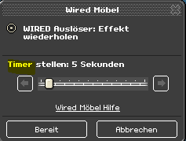
Effekt wiederholen besitzt einen Timer und resetet sich immer nach der eingestellten Zeit
Die Reset-Zeit des Countdown-Timers kann sich mit der Reset-Zeit der Wireds überschneiden. Das spielt dann eine große Rolle, wenn ein Wired wie Effekt wiederholen zum Auslösen des Spielstarts verwendet wird. Interessanterweise taucht der Timer-start-Bug besonders dann auf, wenn man Effekt wiederholen zum Auslösen des Spielstarts verwendet und die Auslösezeit höher stellt. Der Timer scheint also dann anfällig für den Bug zu sein, wenn sich die Reset-Zeiten überschneiden. Das würde erklären, wieso der Timer besser startet, wenn die Effektzeit von Möbelzustände umschalten auf 0,5 Sekunden oder höher ist. Dadurch würden sich die Reset-Zeiten weniger überschneiden, da dann nämlich der Timer später gestartet wird und den Reset später durchführt als der Auslöser.
Das alleine reicht aber noch nicht aus, damit der Timer Bugt, wie vorhin erwähnt gibt es mehrere Faktoren, die den Bug erst möglich machen. Dabei spielen Möbelstücke im allgemeinen eine Rolle, die auf den Timer-Start reagieren wie z. B. Banzai oder ByeBye Böden (siehe Nr. 8: Timer und AFK-Bank, 3. AFK-Bank).
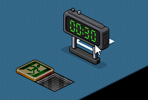
Es gibt Möbelstücke, die auf den Start und Ende des Timers reagieren
Das Wired Spiel beginnt reagiert auch auf den Timer, wenn er startet. Um den Bug zu erzeugen, benötigt man also Effekt wiederholen als Auslöser für den Spielstart, ein Möbelstück, der zumindest auf den Spielstart reagiert und das Wired Spiel beginnt, der nur auf den Spielstart reagiert. In dieser Zusammensetzung passiert der Bug sehr häufig. So ist es sogar möglich den Timer ständig zu stoppen, wenn er startet. Das folgende Gif zeigt gegen Ende hin (kein Standbild!), dass der Timer so schnell hintereinander fehlstartet, dass der Banzai Boden am leuchten bleibt und die Zeitanzeige auf 00:30 festsitzt:
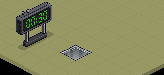
Der Timer wird so oft hintereinander fehlgestartet, dass die Banzai Fliese am Leuchten bleibt
Die Erklärung wie man das genau nachmacht würde den Rahmen hier sprengen, es ist nur wichtig zu wissen welche Faktoren den Bug begünstigen. Die Möbelstücke (Banzai/ByeBye/Spiel beginnt) fragen den Timer nach seinen Stand ab und reagieren entsprechend darauf, es scheint so zu sein, dass der Timer bei vielen verschiedenen Abfragen überfordert ist und das Reseten nicht mehr richtig ausführen kann, besonders dann, wenn dieser sich mit dem Reseten des Auslösers überschneidet.
Wenn man den Auslöser Tritt-auf verwendet passiert der Bug im Idealfall zu genau 50 % weniger. Schaut dazu den nächsten Gif an:
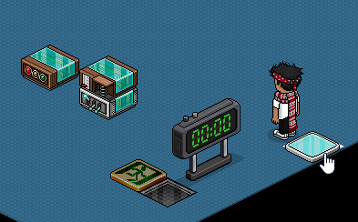
Mit dem Auslöser Tritt-auf passiert der Bug nur jedes 2. mal
Wer gut aufgepasst hat hat bemerkt, dass der Timer zuerst auf 00:00 war und beim 1. herauf treten auf 00:30 gesprungen ist aber nicht gestartet hat. Wenn der Timer normal abläuft bleibt er auf 00:00 stehen und im besten Fall wird er bei Spielstart auf 00:30 springen und direkt starten. Hier jedoch hat der Start gebugt. Erst beim 2. herauf treten wurde er gestarten. Wenn er dann nochmal abläuft bleibt er wieder auf 00:00 stehen und beim herauf treten passiert der Bug oft nochmal. Also jedes 2. mal, falls es keine anderen Störungen oder begünstigende Faktoren gibt.
Je nach Zusammensetzung kann der Bug also anders aussehen, um genauere Aussagen treffen zu können wie der Bug wirklich Zustande kommt müsste man die Programmierung von Habbo kennen, was uns leider nicht möglich ist. Aber wichtiger ist, dass man den Bug sehr gut umgehen kann, wenn die Effektzeit von Möbelzustände umschalten höher als 0 oder auch 0,5 Sekunden liegt. Außerdem kann man darauf achten, dass man einiges im Raum weglässt oder weniger verwendet, z. B. keine ByeBye Böden verwenden stattdessen was anderes oder statt Spiel beginnt andere Auslöser benutzen, wichtig ist falls man Effekt wiederholen verwenden möchte für den Spielstart, dass dieser auf 0,5 Sekunden gesetzt ist. Es müssen nicht auf alle Faktoren verzichtet werden, es reicht oft, wenn nur eins Fehlt damit der Bug nicht zu oft auftaucht. Meistens reicht aber die Erhöhung der Effektzeit. Leider gibt es aber keine 100 %ige Garantie, dass der Timer immer perfekt laufen wird, da man nicht alle Einflüsse unbedingt berücksichtigen kann.
Zusammenfassung, was ist wichtig?
Extra Zusammenfassung des Theorie-Teils:
- Spiel beginnt und Spiel zuende sind 2 Auslöser, die sich direkt auf den Timer beziehen und in denen man nichts weiter einstellen muss
- Spiel beginnt löst Effekte aus, sobald der Timer startet
- Spiel zuende löst Effekte aus, sobald der Timer abgelaufen ist
- Spiel beginnt wird oft verwendet statt Spiel zuende, um eine Eingangstür bei einer Warteschlange zu öffnen
- Die Bedingung Habbo auf Möbel wird bei Warteschlangen verwendet, um zu erkennen ob ein User vor der Tür steht
- Damit der Timer richtig startet muss die Effektzeit von Möbelzustände umschalten immer über (!) 0 oder 0,5 Sekunden liegen und die Auslösezeit (sofern man solche Auslöser gebraucht) so niedrig wie möglich sein, am besten auf 0,5 Sekunden
- Bei Warteschlangen ist es wichtig das Durchlaufen immer auszuschalten
- Die Eingangstür sollte beim betreten nach 0,5 Sekunden geschlossen werden und das Teleportieren sollte ebenfalls nach 0,5 Sekunden passieren
- Das Rausteleportieren nach einer Spielrunde passiert automatisch, wenn ein User bei der Warteschlange wartet, falls man die Methode verwendet wie in Lektion 9 beschrieben
- Wenn keiner bei der Warteschlange wartet wird man nicht automatisch nach einer Spielrunde rausteleportiert und muss das "Exit-Wired" verwenden
Extra Zusammenfassung des Theorie-Teils:
- Wenn sich im Raum keiner mehr befindet tritt nach ca. 30 - 45 Sekunden eine Funktionsdeaktivierung auf, das bedeutet alle Funktionen (auch Wireds und Countdown-Timer) werden gestoppt
- Die Funktionsdeaktivierung taucht auch auf, wenn der Bodenlayout Editor gespeichert wird
- Wenn ein User den Timer startet und den Raum verlässt (z. B. wegen Verbindungsfehler etc.) und er der letzte im Raum war kommt es zu Bugs, wenn etwas nach Spielende passieren soll, weil dann die Funktionsdeaktivierung auftritt
- Verschiedene Möbel wie z. B. ByeBye oder Banzai Böden reagieren auf den Start bzw. Ende des Timers und können den Timer-Start behindern, sodass dieser direkt danach wieder beendet
- Es gibt verschiedene Faktoren, die den Timer beim Starten Buggen können, die beste Methode ist daher die Effektzeit von Möbelzustände umschalten zu erhöhen